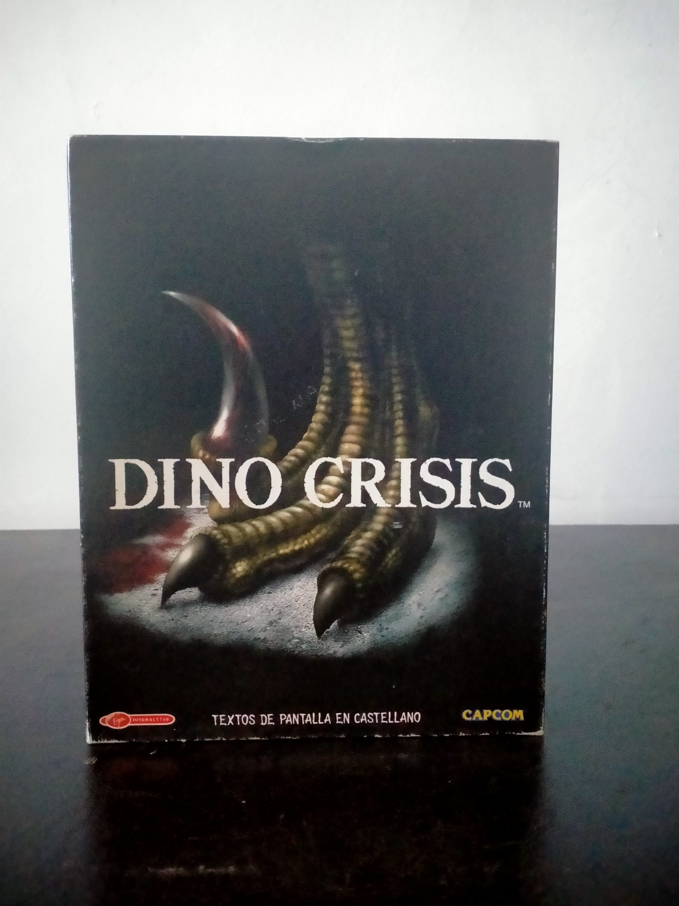

Ficha #000023
Dino Crisis
Dino Crisis es una aventura de acción y survival horror desarrollada por Capcom bajo la dirección de Shinji Mikami, trasladando la fórmula de tensión, exploración, gestión de recursos y resolución de puzles asociada a Resident Evil a un entorno de ciencia ficción con dinosaurios. La versión para PC adapta el lanzamiento original de consola con escenarios y personajes en 3D en tiempo real, persecuciones dinámicas y combates contra criaturas como velociraptores y T-Rex. Esta edición física española en caja grande fue distribuida por Virgin Interactive y Capcom, con textos de pantalla en castellano, y representa una pieza relevante dentro del catálogo de conversiones de Capcom para PC de finales de los noventa.
- Formato
- Big Box
- Plataforma
- Win95 Win98
- Género
- Survival horror Acción aventura Aventura en tercera persona
- Serie
- Todos Big Box
- Desarrollador
- Capcom Production Studio 4
- Distribuidor
- Capcom, Virgin Interactive
- EAN
- 5028587102875
Contenido de la edición
- Caja de cartón Big Box
- Manual
- CD-ROM en caja jewel case
Preservación
- Protección
- No determinado
- Formato recomendado
- BIN/CUE
- Jugable en virtualización
- Sí
Recomendable preservar el CD-ROM como imagen de disco completa y conservar la instalación original junto con posibles parches de compatibilidad para sistemas Windows modernos. No hay evidencia suficiente en la edición mostrada para confirmar un sistema anticopia concreto.